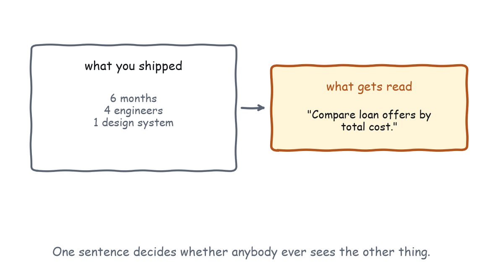

Chapter 13
Distribution, or Your Server Is Your Storefront
How anybody finds your app, why the listing is a render too, and the laws on one page.
Everything up to here assumed your app got called. This chapter is about the step before that, which decides whether any of the rest ever happens.
Two doors, two users
There are two ways somebody ends up with your app in front of them, and they map onto the two users, because of course they do.
A human browses. They go to a registry, a directory, or a marketplace inside their host, and they read listings: name, one-line description, maybe an icon and a screenshot. They install the one that sounds like what they need, and then they mostly forget about it.
A model selects. Your server is already connected, along with eleven others, and the model is choosing among forty tools for the next call. It reads names, descriptions, and schemas, and it picks one. That second door gets used far more often per unit of time, because a human installs you once and a model chooses among your tools every turn, for months. Which means the tool description you wrote back in Chapter 2 is not only how the model operates your app. It is your entire ranking algorithm.

The listing is a render
Apply the whole book to your listing, because it is subject to the same rules. It has one glance, so somebody scrolling a directory gives your row the same half second they give your widget, and the first words have to say what this is for. It should not ask what the reader already knows, so a listing that opens by explaining what MCP is has spent its first line on somebody who is already standing in a registry. It should omit needless words, because “a powerful, comprehensive solution for…” is four words that say nothing followed by the actual answer. And it builds or spends trust, since the listing is where a user decides whether to grant your server access to their conversations, which means naming the origin and saying what you touch, and, if your apps declare no network access, saying that here, where somebody is deciding.
The concrete version, for both audiences:
| For the human browsing | For the model selecting | |
|---|---|---|
| Name | Recognisable, sayable | Guessable from the task |
| One line | What problem it solves | What it does |
| Description | Why it beats the alternative | When to reach for it |
| Tool names | Rarely seen | The primary signal |
| Schemas | Never seen | What the model can pass you |
Notice the bottom two rows. Half your storefront is invisible to human shoppers and decisive for the other user, and it is the half nobody reviews before launch.
A listing, before and after
Here is a real one, of the kind that fills registries now.
Illustrative, not from the gallery
Northwind Billing MCP
The comprehensive billing integration for modern teams. Northwind
Billing brings the full power of your billing stack into your AI
workflow with a rich, interactive experience.
Tools: northwind_billing_v2, northwind_get, northwind_list,
northwind_action, nw_utilThree sentences and not one of them says what the thing does. “Comprehensive”, “full power”, “rich, interactive experience” are all adjectives about the product rather than facts about the job, so a human skimming learns nothing and a model reading the tool names learns less. northwind_action could do anything. nw_util is a shrug with an underscore in it.
Illustrative, not from the gallery
Northwind Billing
Look up invoices, check payment status, and issue refunds against your
Northwind account. Apps declare no network access.
Tools: find_invoices, invoice_status, issue_refund, void_refundSame product. The first line names three jobs in the words a user would use to ask for them, which means the human knows in one glance whether this is the thing they need and the model has three trigger phrases before it has read a single description. The second line is a trust claim the platform enforces. And the tool names are verbs with objects, one of which is the undo for another, which Chapter 9 requires and which a careful reader will notice before installing.
The second version is shorter and says more, which is the whole of Chapter 5 applied to a text field in a form nobody thinks of as design work.
The first thirty seconds after an install
Somebody just connected your server. What happens next decides whether they still have it connected next week.
Your tool list is read immediately, by the model, in full. Every tool you expose is now competing for attention in a list that also contains ten other servers, so a server with forty tools has not given the user forty capabilities. It has made every selection harder, including selections that have nothing to do with you. Expose the tools somebody would ask for and keep the internal ones internal: if a tool exists only to be called by your own app, it does not need to be in the list at all in most designs, and where it does, the description should say so.
The first render sets the expectation for everything after it. If it is a dashboard nobody asked for, the user has learned that your server produces dashboards nobody asked for, and the second render starts from behind. The first refusal sets the trust: if your server’s first act is a consent prompt for something the user did not initiate, you have spent the goodwill from Chapter 10 before earning any. The practical version of all three is to pick the one thing your server does that is most likely to be the first thing somebody wants, and make that path perfect. Everything else can be merely good.
Registries, and what they can actually see
A registry entry has less to work with than you think. It has your name, your description, your tool list, and whatever metadata the registry chose to collect. It does not have your renders, because nobody has called anything yet.
Which means the discoverability signals available to you are, in order of weight: your tool names and descriptions, which are searchable, quotable, and the thing a model reads when deciding among installed servers, so this is the same text doing its third job; your server’s own description, one paragraph, written for the human deciding whether to connect you to their conversations, which is a trust decision more than a feature decision; your declared permissions and CSP, because a server whose apps declare no network access is making a claim a registry can display and a user can weigh, which is where the design decision from Chapter 10 becomes a listing feature; and then everything else, meaning screenshots, icons, and categories, which are nice and not decisive.
Many apps, one server
The gallery has seventeen apps and one server, which is a slightly unusual shape, and real products end up there faster than they expect: a picker, a form, a dashboard, and three internal tools, all in the same connection.
Two things go wrong at that size, and neither is technical. The first is that the tools stop being distinguishable. Six descriptions written over six months by four people converge on the same vocabulary, and the model starts choosing between things that sound alike, which produces the failure that reads as randomness: the same phrasing gets a different tool on different days. The fix is to read your own tool list end to end, out loud, in one sitting, roughly once a quarter. It takes ten minutes and it is the only review that catches this, because every individual description looks fine in its own pull request.
The second is that the apps stop looking like each other. Different padding, different type scale, different verbs on the buttons, different words for the same concept. On a website that would be a brand problem. Here it is worse, because your apps are not adjacent to each other, they are adjacent to the host’s own messages and to other people’s widgets, so inconsistency inside your own set reads as instability rather than as variety. A shared stylesheet and a shared bridge cost almost nothing and are the entire fix; the gallery inlines both at serve time for exactly this reason.
There is also a question of how many is too many, and the honest answer is that it depends on how many of them a single user needs. Sixteen tools that serve six distinct jobs is fine. Sixteen tools that are six jobs plus ten variations on “list things” is a menu, and Chapter 5’s argument about launchers applies to tool lists as much as to widgets.
Naming, briefly
Tool names do more work per character than anything else in your server, and the rules are short. Verb plus object, so compare_rates, find_clause, submit_expense: what it does, to what. No product names, because loaniq_analyze requires the model to know what LoanIQ is and compare_rates does not. No versions, since search_v2 tells the model there is a v1 and invites it to wonder which one you meant. Disambiguate close pairs, because if you have submit_expense and save_expense then one of them is getting called wrongly, and the fix is names that differ in the verb the user would use. And say no in the description, since “do not call this before origin, destination, and date are known” is a real constraint that a model will honour, which makes negative space part of the door handle.
Versioning, without breaking the address space
One operational note belongs here rather than in Chapter 6, because it is a distribution problem wearing an engineering hat. Your tool names and descriptions are addresses, and changing them changes what the model can reach, in every conversation, everywhere, at once.
Safe changes are adding an optional property, adding a tool, improving a description without changing what it triggers on, and changing your widget’s layout entirely. Unsafe changes are renaming a tool, adding a required property, narrowing an enum, and changing what a description triggers on, which is the one nobody counts as a change. That last item deserves a sentence of its own: if you rewrite a description to be more precise, you have changed the set of phrasings that reach your tool, which is a behaviour change with no code diff, invisible to every test you currently run, and exactly what Chapter 11’s prompt suite exists to catch.
The temptation is to solve all of this with search_v2. Do not. Two tools that do the same thing are two tools the model has to choose between, forever, and it will sometimes choose the old one. Deprecate by removal, on a schedule you announce, and keep the address space small.
When the app is the product
One case changes the calculus in this book and is worth naming. Sometimes the MCP App is not a companion to a product that exists elsewhere. It is the whole thing: no web app to port, no SaaS to shrink, and the conversation is the only surface.
Three things change. The first render carries more, because it is not one paragraph in somebody’s task but the first impression of your product, so it can afford slightly more, a name and a sense of what else is here, and only slightly, because the viewport did not get bigger. Retention lives in the model’s memory rather than in a bookmark, since people return by asking again, which makes your tool names and descriptions your homepage, your search ranking, and your brand recall all at once. And trust is your whole moat, because with no website behind you the only signals a user has are your listing, your declared permissions, and how your renders behave, at which point Chapter 10 stops being a chapter about courtesy and becomes a chapter about business.
What does not change is every law in Part 1. An app-first product that ships a dashboard nobody asked for fails in exactly the same way, and faster, because it has nothing else to fall back on.
What you cannot measure, and what you can
Distribution comes with a temptation, which is to instrument everything, because everything is now instrumentable. Some of it you genuinely cannot see: what the user did inside your sandboxed frame is invisible to the host and to you, by design, unless you wrote it back. So the instinct to add analytics to a widget runs directly into the sandbox, and it should, because an app that phones home about interaction detail is an app that cannot make the promise in Chapter 10, and that promise is worth more than the funnel.
What you can see, without spending any trust, is five things, all of them server-side. Invocation rate, meaning how often your tool is chosen and for which phrasings, which is the number that matters most. Re-invocation, meaning whether the same conversation comes back to you and whether the same user does tomorrow, which is the honest version of engagement and which goes up when your app finishes fast. Argument completeness, meaning what fraction of calls arrive with the optional fields filled, where a low number says the model is not confident about your schema and that is a description problem you can fix. Error and retry rates, meaning which failures the model recovers from and which end the conversation, which is Chapter 9’s argument about error messages, measured. And follow-through, meaning how often the action happens after the render, where a picker that renders a hundred times and holds four flights is telling you something.
None of those requires watching the user. That is a happy accident of the architecture, and it is worth defending when somebody asks for a heatmap.
The laws, on one page
Here they are, in the order you should apply them.
The conversation holds the context, the momentum, and the model’s working state, and breaking the flow costs all three. Before you render, ask: does this need to be seen or just read? Will the user act or just glance? Does the conversation already contain the answer?
Names, descriptions, and schemas are the model’s affordances, and ui/set-context is its feedback. Compute the fact once and render it twice. In every design review, ask what the model sees when this renders.
Put the fields in your schema so the model can fill them. Show what you assumed, say where it came from, and put corrections one click away. Every control you add is a consent prompt you might have added.
Six archetypes cover nearly everything, so know which one you are building. When two are fighting, split rather than compress. And the right widget count is sometimes zero.
Print it. Tape it to the monitor. Appendix A is the same page, formatted for exactly that.
What this book was arguing
One thing, in the end. Every host that renders MCP Apps is about to fill up with widgets, and most of them will be slower paragraphs, dashboards nobody asked for, and forms that re-ask what the conversation already established. That is not a prediction about developers being careless. It is what happened on the web, and on mobile, and it happened because the tools made building easy before anybody agreed on what was worth building.
The thing that eventually fixed the web was not better frameworks. It was a shared sense of taste, spread by a small number of short books that stated obvious things nobody was acting on, and by testing cheap enough that nobody had an excuse. That is what this was: four laws, a gallery you can run, and a testing method that costs an afternoon and ten cents.
The medium is new enough that the conventions are still being set, which means whatever you ship next is part of setting them. Ship the card, not the dashboard. Write the description as though it were the only thing you shipped. Say what the human just did. Test with five people and ten prompts.
And do not make me leave the chat.